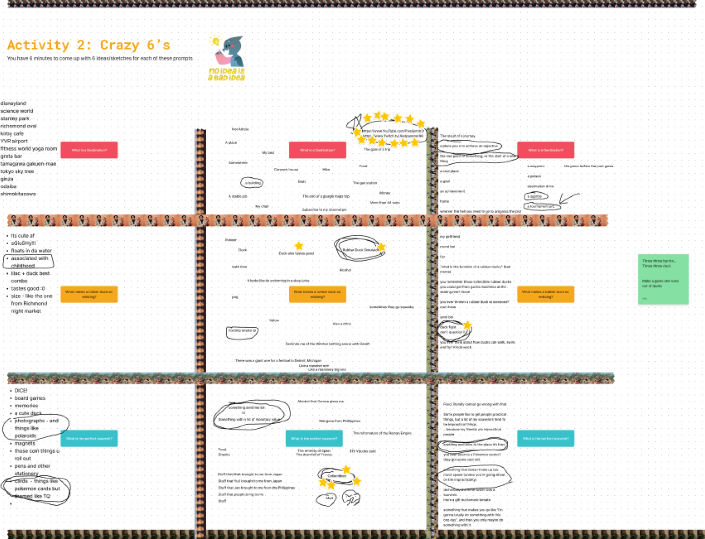
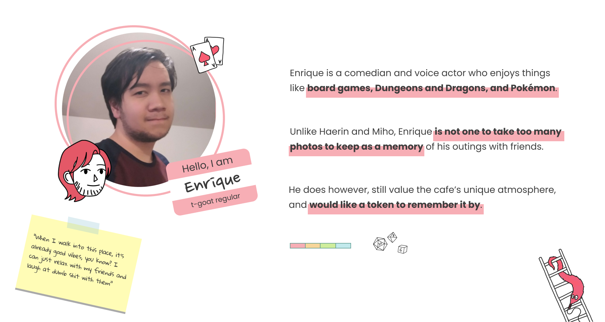
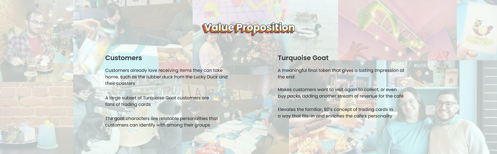

Turquoise Goat is a 90’s themed board game cafe located in Vancouver. BC. It is a place for people from all walks of life to gather, play games, and enjoy food and unique beverages. The nostalgic ambience appeals to older customers, who can re-live their childhood while the friendly atmosphere welcomes children as well.
In this semester long project, my team and I worked with Turquoise Goat to find opportunities in design that could benefit their business. In the end we designed unique trading cards as a way for customers to have a keepsake and commemorate their stay in the cafe.
Research: The Brief?
We had no brief, and having not been customers before, we did not know what areas of the cafe we as a team can intervene in. Therefore, our team and I had to conduct research, find an opportunity, and design an intervention for that opportunity.
Ethnography
We conducted 2 on-site ethnography sessions, observing staff-customer interactions, immersed ourselves in the cafe’s atmosphere, and assessed their services. We documented our finding through field notes, photos and interviews involving 7 staff and 7 customers. Participants shared their experiences, which included enjoyable anecdotes as well as frustrations.
Defining the Scope and Viability
When ideating concepts that could help the cafe, our team ended up creating solutions solely on the individual’s emotional lows and pain-points, which resulted in us creating solutions that don’t bring significant value to the cafe. This roadblock forced us to pivot into a new direction. To do so I looked towards focusing on what staff and customers loved about Turquoise Goat and how we can enhance that. Looking back to our research data, we found one quote that helped us drive the project on a new road.
This was a significant moment in learning for me and my team, where we learned that design is not all about solving issues and pain-points, but finding an opportunity space to create impact from avenues that already exist within the business.
“I want to create a destination for people, a place where they can stay for the long haul”
- Leah, Co-owner
Co-Design Workshop: So what is a destination?
To further define what a destination meant, I helped facilitate a 1-hour workshop with the co-owner of the cafe in-person, as well as an online workshop with 3 regular Turquoise Goat customers. We did activities like Rapid Drawing, Crazy 8s, and Rose/Thorn/Bud. I helped with designing the outline of the worksheets involved.
In-person workshop

Online workship with customers using Figjam
Through these workshops, we found that a destination means:
A place where you can feel immersed in an unfamiliar world, due to its atmosphere, activities and uniqueness
A place to celebrate milestones and make personal memories with friends and family
A place where your experience was significant enough that you may want to take home a souvenir as a token of that visit
Additionally, I uncovered other opportunities for further exploration when the time came for concept ideating:
1. Turquoise Goat under utilize their Goat Mascot, Billy, in their branding
2. “I don’t like it when you leave a really good restaurant and they give you a 2 cent mint that's the last thing you experience” - Co-Owner
Who are we designing for?
To focus our thinking, I synthesized our research and created a customer that encapsulates the common traits and insights derived from our observations and interviews.

Framing: Our Design Focus
We framed our intervention around: Enhancing Turquoise Goat’s appeal as a destination where people can make personal memories with family and friends, and preserve the unique experience they built together.
The Intervention: Colourful and Shiny Trading Cards
We found an opportunity to create a Turquoise Goat branded souvenir that would be given at the end of a customer’s stay at the cafe as a long lasting reminder of their experience. As a team, we came up with the idea of collectible trading cards that depict different types of customers and board-game players at the cafe. We also created a touchpoint for potential revenue where customers can buy booster packs that contain 5 cards each, offering colour variants and holographic finishes of cards.
Storyboard: The Customer's Journey
We made a storyboard that maps out how distrubuting the cards work for both staff and customers. Our intervention occurs during the transaction phase, where a staff member distrubutes cards to based on the number of people per group.
Content Design: A Piece of Something Larger
To create interesting card designs, I conducted precedent study on other collectible cards such as the Pokemon Trading Card Game, and Cardfight Vanguard. Through this study, I suggested to my team that we create cards that are pieces to a large image, so all cards are put together they make one complete image that enncompasses the diverse array of people that come to Turquoise Goat. I revisited our research data again to understand the different types of personas there are at Turquoise Goat and made 8 unique archetypes to be put on the cards based on them. After consolidating and laying out the archetypes on the cards, I passed them over to my teammate to be illllustrated.
Production: Visual Design
As one of the main visual designers in my group, I opted for a vibrant colour palette that reflects Turquoise Goat’s branding and created a design system within Figma to ensure our group members’ designs remain consistent with one another and cohesive. During production, I designed the card frames, packaging, and card back
Production: Exacto Knives, Holographic Vinyls, and Paper Cuts
Our team got together and created physical mockups of our cards, where we printed and cut out all the cards and packaging, assembled them and later took photos with my DSLR camera.
Value

Reflection
Within 13 weeks, I learned so much about working with a real client, navigating team conflicts, communication, project management and design tools; all skills that could be used in the industry. This project also came with a lot of challenges. Our design process was never linear. We were constantly diverging, converging, killing concepts, and going back to square one. Many decisions were made during this project and we reframed our design focus many times, but it was these decisions and learning more about our audience along the way is when we were able to reach our “Aaahh…Eureka!” moment.
This project was selected to be exhibited at our school’s Spring 2023 Semester showcase online, and I am extremely proud of how I grew as a designer from this project, and I am looking forward to working with more clients in the future.